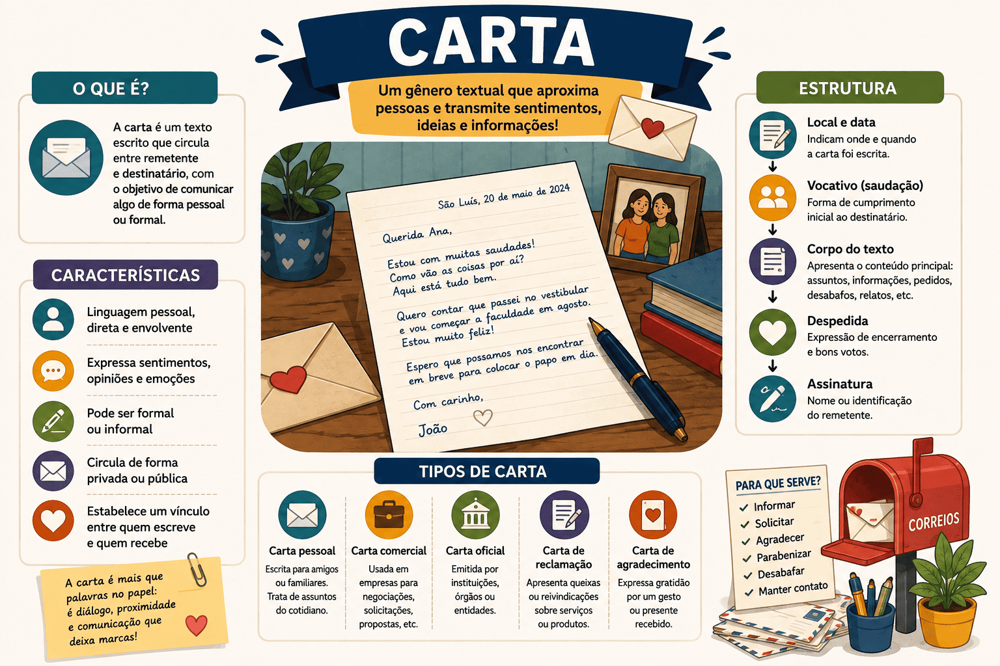

Carta: O que é, Tipos, Estrutura e Dicas para Redação
A carta (ou epístola) é um dos gêneros textuais mais antigos e tradicionais da humanidade. Antes da invenção da internet e dos aplicativos de mensagens, ela era o principal meio de comunicação a distância. Hoje, embora a carta pessoal escrita à mão seja rara, a estrutura epistolar sobrevive e se adapta em e-mails, ofícios e, principalmente, em provas de redação.
Em vestibulares de alta concorrência (como UNICAMP, UEMA, UEL e outras universidades estaduais), a carta é uma cobrança recorrente, especialmente na sua modalidade argumentativa. Nessas provas, o candidato é testado não apenas na sua capacidade de escrever bem, mas na habilidade de assumir um "papel" e dialogar de forma persuasiva com um interlocutor específico.
Diferente da dissertação tradicional do ENEM, que é impessoal, a carta exige interlocução direta: existe um "eu" (remetente) escrevendo diretamente para um "você" ou "senhor" (destinatário), situado em um espaço e tempo bem definidos.
Neste conteúdo, você aprenderá o que é o gênero carta, quais são as diferenças entre a carta pessoal e a carta argumentativa, a estrutura obrigatória que você não pode esquecer na prova e dicas essenciais para não zerar por fuga ao gênero.

O que é o gênero carta?
A carta é um gênero textual dialógico, ou seja, estabelece uma comunicação direta entre um emissor (remetente) e um receptor (destinatário). Ela se caracteriza por possuir uma estrutura formal rígida (local, data, vocativo, despedida e assinatura) e por ser moldável ao propósito de quem escreve, podendo informar, relatar, opinar, reivindicar ou expressar sentimentos.
Carta é um texto de interlocução explícita que obedece à estrutura epistolar, exigindo do autor a adequação da linguagem ao nível de intimidade e ao objetivo pretendido com o destinatário.
Quais são as principais características da carta?
Independentemente do tipo de carta, algumas marcas linguísticas e estruturais são universais nesse gênero:
Marcas do gênero epistolar
- Interlocução Direta: Uso intenso de pronomes de 1ª pessoa (eu, meu) para o remetente e de 2ª ou 3ª pessoa (tu, você, Vossa Excelência) para o destinatário.
- Marcadores de Espaço e Tempo: O texto está sempre ancorado em um local e momento específicos (ex: São Luís, 10 de outubro de 2026).
- Adequação Vocabular: A linguagem muda de acordo com o destinatário. Se a carta é para um juiz, exige-se padrão formal rigoroso; se é para um amigo íntimo, permite-se coloquialidade.
- Presença de Vocativo: É o chamamento inicial que invoca o leitor logo no início do texto.
O conceito de "Máscara" nos Vestibulares
Em provas que cobram cartas, a banca geralmente exige que você assuma uma "máscara" (um personagem). O comando pode dizer: "Escreva como se fosse um médico preocupado com o surto de dengue, direcionando-se ao Prefeito". Você não deve escrever como "estudante prestando vestibular", mas incorporar as dores, a visão e o tom desse médico no seu texto. Nunca assine seu nome verdadeiro! Use apenas a assinatura que a banca mandar.
Tipos de Carta (Pessoal x Argumentativa)
As cartas variam amplamente conforme sua finalidade. Nos estudos de produção textual, focamos principalmente na distinção entre a carta pessoal e a argumentativa.
Carta Pessoal
É enviada a familiares, amigos ou conhecidos. O objetivo é manter contato, relatar acontecimentos da vida privada ou expressar afetos. A tipologia predominante é a narrativa ou descritiva, e a linguagem é mais flexível, permitindo coloquialismos e tons emocionais.
Carta Argumentativa
É enviada a autoridades, jornais (Carta do Leitor) ou instituições. O objetivo é reclamar, sugerir, persuadir ou reivindicar. A tipologia é dissertativo-argumentativa. Exige norma-padrão, tom respeitoso, embasamento lógico com dados e propostas claras de solução.
Qual é a estrutura de uma carta?
O desrespeito à estrutura estética da carta é um dos maiores motivos de perda de pontos em provas de redação. Siga rigorosamente o formato abaixo:
| Parte | Detalhes e Exemplos |
|---|---|
| 1. Cabeçalho (Local e Data) |
Sempre na primeira linha, à esquerda ou deslocado. Deve conter vírgula após a cidade e ponto final. Ex: Campinas, 27 de agosto de 2026. |
| 2. Vocativo |
O chamamento, escrito na linha seguinte. Usa-se vírgula ou dois-pontos ao final. Ex: Prezado Diretor, ou Caro amigo, |
| 3. Corpo do Texto | Onde se desenvolve a mensagem. Em cartas argumentativas, divide-se em introdução (apresentação do problema), desenvolvimento (argumentos/causas) e conclusão (pedido/sugestão). |
| 4. Despedida |
Uma frase curta de encerramento alinhada ao tom da carta. Ex: Atenciosamente, / Cordialmente, / Um grande abraço, |
| 5. Assinatura | A identificação de quem escreve. Em provas, obedeça ao comando (ex: "Um cidadão indignado" ou iniciais). |
Questão de aplicação
Questão: (Vestibular / Adaptada) O fragmento abaixo foi redigido por um candidato para a proposta de redação de um vestibular:
"(...) Diante do exposto, Senhor Governador, reforço a necessidade urgente de investimentos na revitalização da lagoa. O descaso com o ecossistema local afeta não só a flora, mas a saúde respiratória dos ribeirinhos. Aguardo ansiosamente que Vossa Excelência paute essa demanda na próxima assembleia estadual.
Respeitosamente,
Um ambientalista local."
A leitura do trecho permite afirmar que ele pertence a uma:
- Carta Pessoal, pois o emissor assina de forma intimista e aguarda ansiosamente uma resposta afetuosa.
- Dissertação objetiva estilo ENEM, pois apresenta um problema ambiental e propõe uma intervenção com agentes claros.
- Carta Argumentativa, justificada pela interlocução explícita (Senhor Governador), uso formal da linguagem e caráter reivindicatório.
- Notícia, pois relata o problema ambiental do ecossistema e aponta as causas dos problemas respiratórios.
- Carta Aberta, pois o ambientalista convida toda a população a assinar o documento de revitalização da lagoa.
Resolução
A alternativa correta é a 3 — Carta Argumentativa, justificada pela interlocução explícita...
O texto possui um tom de cobrança pautado em argumentos lógicos (impacto na flora e saúde humana) e dirige-se a uma autoridade específica usando os pronomes de tratamento adequados (Senhor, Vossa Excelência), finalizando com a despedida (Respeitosamente). Não é dissertação do ENEM (2) porque a dissertação não permite se dirigir ao leitor. Não é carta pessoal (1) devido à formalidade, nem carta aberta (5) pois não se destina diretamente à população geral no trecho lido.
Resumo: Como identificar e escrever o gênero Carta?
A carta é o gênero da interlocução, moldada pela relação entre quem envia e quem recebe.
- Estrutura Física: Obrigatório conter Local/Data, Vocativo, Corpo, Despedida e Assinatura.
- Linguagem: Depende do nível de intimidade. Formal para cartas argumentativas/comerciais; informal para cartas pessoais.
- Foco no Vestibular: Entenda a "máscara" pedida pela banca (seja o personagem) e mantenha a comunicação (dialogismo) ao longo de todo o texto, sem transformá-lo em uma dissertação comum.
Perguntas frequentes sobre o gênero Carta
Posso colocar meu nome real na assinatura da carta no vestibular?
Não! Em hipótese alguma. Assinar o seu nome verdadeiro em qualquer redação de vestibular é considerado quebra de sigilo (marca de identificação) e gera nota zero (anulação) automática. Siga exatamente o que a proposta pedir (ex: assine apenas como "estudante" ou com as iniciais fornecidas).
Qual é a diferença entre Carta Argumentativa e Carta Aberta?
A carta argumentativa convencional tem um destinatário específico (ex: o diretor de uma escola) e seu teor foca em convencê-lo. A carta aberta até pode ter um destinatário, mas é escrita com a intenção clara de ser publicada para a sociedade ler, funcionando como uma denúncia pública para pressionar a autoridade.
Na carta argumentativa, posso usar pronomes na 1ª pessoa?
Sim, é essencial. A carta é um gênero dialógico. Usar "eu acredito", "solicito", "estamos preocupados" (nós) marca a presença do remetente e é uma característica fundamental do texto epistolar, diferentemente da dissertação do ENEM, que prefere a 3ª pessoa ou 1ª do plural.
Continue estudando Produção Textual
- Carta Aberta: O que é, Como Fazer, Estrutura e Dicas para Redação
- Texto Dissertativo-Argumentativo: estrutura, características, exemplos e como fazer
- Como Fazer um Artigo de Opinião: estrutura, exemplos e passo a passo
- Gêneros discursivos: conceito, tipos e exemplos
- Coesão, coerência e progressão temática na produção textual
- Competências da Redação do ENEM: guia completo das 5 competências
- Como Elaborar uma Boa Introdução e Tese para a Redação do ENEM
- Produção Textual e Redação — página 1
- Produção Textual e Redação — página 2
Referências
FIORIN, José Luiz; SAVIOLI, Francisco Platão. Para entender o texto: leitura e redação. São Paulo: Ática.
MACEDO, Roberto. Gêneros epistolares e argumentação em vestibulares. São Paulo: Contexto.
Explore Outros Conteúdos
Continue seus estudos acessando outras seções do site Mestre Kira: